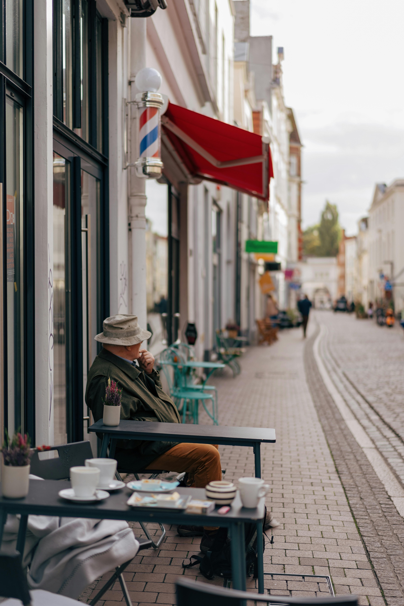
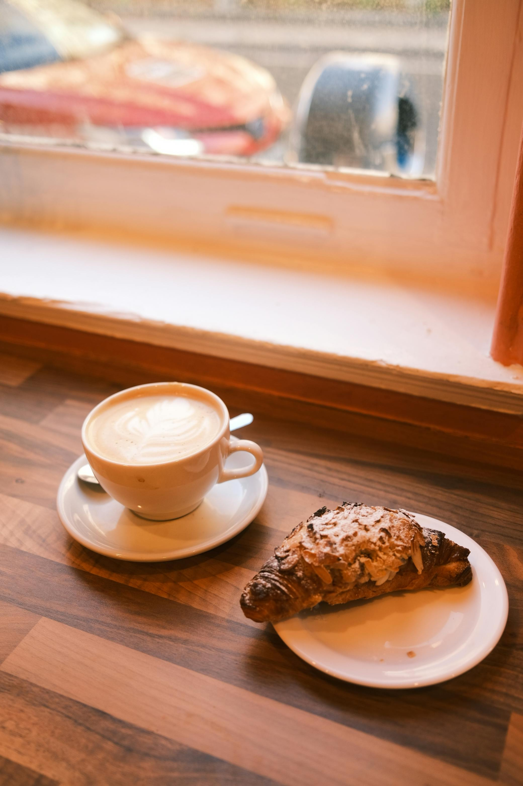

featured story
why bakery mornings feel so comforting

There is something quietly comforting about stepping into a bakery early in the day. The room still feels calm, the trays are freshly filled, and the scent of butter and warm bread makes the whole space feel softer than the street outside. Even before ordering anything, the atmosphere already creates a sense of ease.
Small bakeries often leave a strong impression because they pay attention to details. Handwritten labels, warm lighting, wooden shelves, and ceramic plates can make a place feel more personal. These small choices shape the experience just as much as the food itself. Instead of feeling rushed or overly polished, the space feels lived in and cared for.
the role of texture and routine
Texture is a big part of why bakery food feels so memorable. Flaky pastry layers, glossy fruit toppings, soft milk bread, and crisp crusts all create contrast. Before taking a bite, people are already responding to what they see. Pastries are appealing not only because of taste, but because they look delicate, warm, and carefully made.
“a bakery morning can feel less like rushing through breakfast and more like giving yourself a gentler start.”
Routine matters too. Many people return to the same café or bakery for a familiar drink, a favorite pastry, or even the comfort of sitting in the same corner. These repeated habits become part of daily life. In that way, bakery spaces are not just about food. They are also about steadiness, comfort, and small rituals that make the day feel manageable.
why these spaces stay with us
Bakery interiors often connect food with memory. The smell of butter or coffee can remind people of weekends, family kitchens, or slow mornings during quieter times. Because of that, these places can feel emotional in a way that goes beyond simply eating. A pastry becomes tied to atmosphere, mood, and a sense of pause.

In the end, the appeal of a bakery morning comes from a mix of simple things done well: warm food, soft light, comforting smells, and a little bit of routine. In busy everyday life, these spaces offer something gentle. They invite people to slow down, notice details, and enjoy a moment that feels warm and familiar.